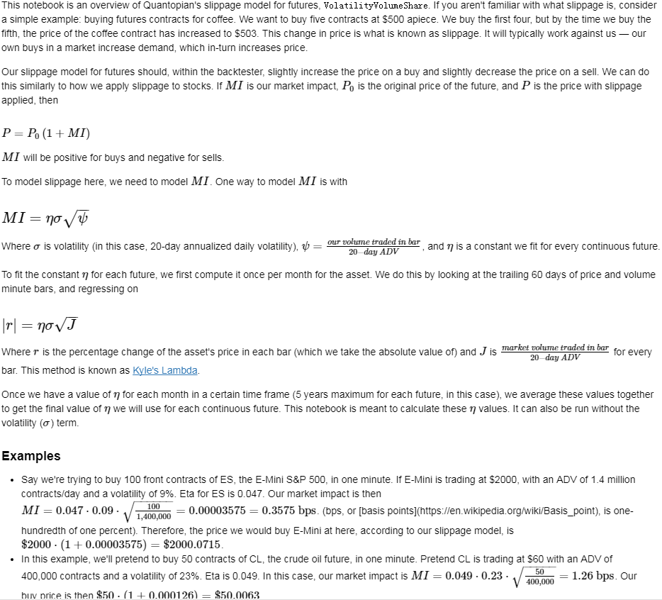

Table of Contents
1 future trade simulation
1.1 functions
- calendar spread trading.
buy current month expired contract. short next month expired contract.
- rolling on constant maturity.
- Goldman roll strategy:
roll (with uniform weights) between the fifth and ninth business days of the month proceeding the expiration month.
The likely virtue of such a strategy in comparison to the single-day strategy is that the user has a lower risk of being exposed to poor execution quality.
- trend following on dominant contract.
moving average crossing over on the continous contract.
1.1.1 constant maturity
Negative roll yield can occur as an investor sells an expiring futures contract and simultaneously purchases a new contract. If the price of the new replacement contract is higher than the expiring contract, the transaction will yield a negative cash result, also known as negative roll yield.
1.2 futures:
由期货交易所统一制定的、规定在将来某一特定的时间和地点交割一定数量和质量标的物的标准化合约。
1.2.1 期货合约命名规则：
品种名+交割月份
1.2.2 期货合约品种:
商品期货和金融期货。
商品期货又分工业品（可细分为金属商品（贵金属与非贵金属商品）、能源商品）、农产品、其他商品等。
金融期货主要是传统的金融商品（工具）如股指、利率、汇率等，各类期货交易包括期权交易等。
- 商品期货
- 农产品期货：
如大豆、豆油、豆粕、籼稻、小麦、玉米、棉花、白糖、咖啡、猪腩、菜籽油、棕榈油。
- 金属期货：
如铜、铝、锡、铅、锌、镍、黄金、白银、螺纹钢、线材。
- 能源期货：
如原油（塑料、PTA、PVC）、汽油（甲醇）、燃料油。新兴品种包括气温、二氧化碳排放配额、天然橡胶。
- 金融期货
- 股指期货：
如沪深300指数, 'IF'
- 利率期货（Interest rate futures）：
利率期货是指以债券类证券为标的物的期货合约，它可以避免利率波动所引起的证券价格变动的风险。利率期货一般可分为短期利率期货和长期利率期货，前者大多以银行同业拆借中场3月期利率为标的物、后者大多以5年期以上长期债券为标的物。
- 外汇期货(foreign exchange futures):
又称为货币期货，是一种在最终交易日按照当时的汇率将一种货币兑换成另外一种货币的期货合约。是指以汇率为标的物的期货合约，用来回避汇率风险。它是金融期货中最早出现的品种。
- 贵金属期货
主要以黄金、白银为标的物的期货合约。
贵金属按化学元素周期表命名，黄金为‘au’，白银为‘ag’。
1.2.3 国内future exchange:
1.2.4 dominant_future - 期货主力合约
合约首次上市时，以当日收盘同品种持仓量最大者作为从第二个交易日开始的主力合约。当同品种其他合约持仓量在收盘后超过当前主力合约1.1倍时，从第二个交易日开始进行主力合约的切换。日内不会进行主力合约的切换。
1.2.5 trading calendar:
- future calendar spread adjustment, 合成一个连续合约.
1.2.6 future attributes:
- root_symbol:
The root symbol of the underlying asset. For example, CL corresponds to crude oil.
- start_date:
The date the contract becomes available on Quantopian. Note that the price of a contract might be NaN near the start_date, as it may not be actively traded until it gets closer to its delivery date.
- end_date:
The last date the contract can be traded or closed before delivery.
- notice_date:
The date in which the exchange can start assigning delivery to accounts holding long positions on the contract.
- auto_close_date:
This is two days prior to either notice_date or end_date, whichever is earlier. In backtesting, positions in contracts will be automatically closed out on their auto_close_date.
- tick_size:
The increment in which the price of the future can change. For example, CL changes in increments of $0.01.
- multiplier:
The number of units per contract. For example, a contract for CL corresponds to 1000 barrels of oil.
参考各交易所各品种手册。
for example:
| 交易品种 | 黄金 |
| 交易单位 | 1000克/手 |
| 报价单位 | 元（人民币）/克 |
| 最小变动价位 | 0.05元/克 |
| 每日价格最大波动限制 | 不超过上一交易日结算价±3% |
| 合约交割月份 | 最近三个连续月份的合约以及最近13个月以内的双月合约 |
| 交易时间 | 上午9:00－11:30 ，下午1:30－3:00和交易所规定的其他交易时间 |
| 最后交易日 | 合约交割月份的15日（遇法定假日顺延） |
| 交割日期 | 最后交易日后连续五个工作日 |
| 交割品级 | 金含量不小于99.95%的国产金锭及经交易所认可的伦敦金银市场协会（LBMA）认定的合格供货商或精炼厂生产的标准金锭 |
| 交割地点 | 交易所指定交割金库 |
| 最低交易保证金 | 合约价值的4% |
| 交割方式 | 实物交割 |
| 交易代码 | AU |
| 上市交易所 | 上海期货交易所 |
1.3 算法
- future contract value:
To better understand the need for continuous futures, let's get pricing data for the chain of individual contracts and plot it.

Figure 1: future contract
The price difference between contracts at a given time is not considered to be an increase in value in the future. Instead, it is associated with the carrying cost and the opportunity cost of holding the underlying commodity or asset prior to delivery.

Figure 2: active contract
- adjustment styles
- multiplying
The Proportionality Adjustment approach is similar to the adjustment methodology of handling stock splits in equities. Rather than taking an absolute shift in the successive contracts, the ratio of the older settle (close) price to the newer open price is used to proportionally adjust the prices of historical contracts. This allows a continous stream without an interruption of the calculation of percentage returns.
The main issue with proportional adjustment is that any trading strategies reliant on an absolute price level will also have to be similarly adjusted in order to execute the correct signal. This is a problematic and error-prone process. Thus this type of continuous stream is often only useful for summary statistical analysis, as opposed to direct backtesting research.
- add
What we have to do is adjust all previous prices up by the gap. This effectively "closes" the gap.
The key problem with the Panama method includes the introduction of a trend bias, which will introduce a large drift to the prices. This can lead to negative data for sufficiently historical contracts. In addition there is a loss of the relative price differences due to an absolute shift in values. This means that returns are complicated to calculate (or just plain incorrect).
- Rollover/Perpetual Series
The essence of this approach is to create a continuous contract of successive contracts by taking a linearly weighted proportion of each contract over a number of days to ensure a smoother transition between each.
For example consider five smoothing days. The price on day 1, P1, is equal to 80% of the far contract price (F1) and 20% of the near contract price (N1). Similarly, on day 2 the price is P2=0.6×F2+0.4×N2P2=0.6×F2+0.4×N2. By day 5 we have P5=0.0×F5+1.0×N5=N5 and the contract then just becomes a continuation of the near price. Thus after five days the contract is smoothly transitioned from the far to the near.
The problem with the rollover method is that it requires trading on all five days, which can increase transaction costs.
- None
Doing nothing.
- roll styles
[https://www.quandl.com/data/SCF-Continuous-Futures/documentation/roll-methodology]
There are 14 different roll rule and price rule combinations, corresponding to all the different use cases for futures data. It is strongly recommended that you use continuous contracts with the correct roll/price rule, if you want your analysis to be accurate and trustworthy. Incorrect concatenation rules or inappropriate use of individual illiquid contracts may seriously impair the quality of your analysis.
- What are the different roll date choices available?
Roll date choices include:
- On the last trading day of the expiring contract. This method is called the last-trading-day or end-to-end roll method. This method allows you to use the front contract for as long as possible; however the danger is that activity may have switched to the back contract prior to your roll. A trading strategy based upon this rule runs the risk of unwanted delivery and/or close-out of your positions, if you do not roll in time (the margin for error is very limited). This is the roll date rule used in Quandl's free continuous futures data (source /CHRIS).
- On the first day of the contract delivery month or on the contract end date, whichever is sooner. This is called the first-of-month roll method, and is used by most major data terminals as their default roll method. It has the advantage that it is uniform across all contracts, and completely predictable. However, this method has very little connection with the underlying mechanics of the contract; it is connected neither to the contract's trading activity, nor to its specific delivery rules. We recommend using this method only for purely deterministic trading strategies which do not rely on behavioral patterns for their returns.
- On the first day that the back contract has a higher open interest than the front contract. This is called the open-interest-switch or liquidity-based roll method, and is used by most technical traders, especially in financial futures. It is also used by macro traders who are primarily concerned with larger longer-term trends, and are hence agnostic to minor differences in valuation within a given commodity complex. This roll rule, by definition, offers the highest liquidity to traders. However, note that it is completely inappropriate for interest rates futures, and should be used with care for energy and agriculture futures.
- What are the different price adjustment choices available?
Price adjustment choices include:
- No price adjustment: the simplest choice. The prices you see are always actual transaction prices; however, there are discontinuous jumps in the long-term futures price history.
- Forwards panama canal method, aka first-true method. Shift successive contracts up or down by a constant amount so as to eliminate jumps, working forwards from the oldest contract in your history. The price of the oldest contract will therefore be "true"; all others will be adjusted.
- Backwards panama canal method, aka last-true method. Shift successive contracts up or down by a constant amount so as to eliminate jumps, working backwards from the current contract. The price of the current continuous contract will be "true" and match market prices; however, you will need to recalculate your entire history on every roll date, which may be impractical.
- Backwards ratio method. Instead of shifting contracts up or down, in this method we multiply contracts by a constant factor so as to eliminate jumps, working backwards from the current contract. As with the backwards panama canal method, this method necessitates full historical recalculation on every roll date.
- Calendar-weighted method. Transition smoothly from one contract to the next, by using blended or weighted-average combined prices during a pre-determined transition window right around the roll date. This method is an elegant compromise between first-true and last-true methods: like first-true, it requires no historical recalculation, and like last-true, it delivers continuous prices that exactly match current market prices. However, this method cannot be used in conjunction with non-predictable roll dates such as open-interest-switch.
With 3 roll rules and 5 price rules in play, there are 15 possible price/roll combinations – minus 1, because calendar-weighted prices are incompatible with open-interest-switch rolling. So there are 14 price/roll combinations available as part of the SCF futures database.
- Which roll date and price adjustment should I use?
It depends on your use case.
If you are using continuous contracts for economic forecasting or regression, you should use *"first day of month" as your roll date rule, and "calendar-weighted rolling" as your price adjustment rule*. These two choices are perfectly deterministic, predictable, and smooth; furthermore they do not contaminate any economic aspects of the price history.
If you are using continuous contracts for chart-based technical analysis, you should use *"open interest switch" as your roll date rule*. Technical analysis depends on finding patterns in trader group dynamics, and hence a popularity-based roll measure is appropriate. For your price adjustment rule, you can use either *"backwards panama" with a linear y-axis, or "backwards ratio" with a logarithmic y-axis*, depending on your =preferred flavor of technical analysis. (Although some traders claim that "unadjusted" prices are more appropriate, since they correspond more closely with psychological perceptions of support, resistance etc.)
If you are using continuous contracts for back-testing trading strategies, you should use a roll date rule that corresponds exactly to your trading strategy. If you always roll on the expiry date, use "last trading day". If you always roll on the first of the month, use "first day of month". If you roll when everybody else rolls (for benchmarking or liquidity reasons), use "open interest switch". As for prices: if you trade based on a constant number of contracts, you should use "backwards Panama" as your price adjustment rule. If you trade based on a constant value of the underlying commodity, you should use "backwards ratio" for your price adjustment rule, and be sure to calculate PL using relative (percentage) changes not absolute (price) changes.
Many experienced futures analysts use different roll/price rules in different parts of their workflow. For example, sophisticated technical traders often use open-interest-switch-roll and unadjusted-prices (code: 'ON') in order to make buy/sell decisions; this splicing method combines maximum liquidity with accurate nominal prices, and thus matches well with mass psychology. But when it comes to back-testing their buy/sell decisions, they use first-of-month-roll and calendar-weighted-prices, since that gives the most accurate, unbiased estimate of historical PL. So the same spreadsheet or backtester can in fact incorporate different roll/price rules, depending on where they're being used. This kind of advanced analysis is simply not possible without the SCF database, unless you're willing to invest huge amounts of time to build your own custom histories.
Here are some examples of what not to do. If you're trading Fed Funds or Eurodollar futures, an open-interest-switch rule is inappropriate, because most of the "action" is in the back contracts. If you're back-testing a trading strategy, you should not use unadjusted prices, because that will introduce artifical PL from roll date jumps. If you're trading a commodity with heavy contango or backwardation, you should not use Panama canal shifts, because they will lead to negative prices. If you're trading equities or currencies, you should never look at the #2 or #3 contracts, because they are utterly illiquid. And so on.
- What are the different roll date choices available?
- Slippage
https://www.quantopian.com/tutorials/futures-getting-started#lesson11
https://www.quantopian.com/posts/quantopians-slippage-model-for-futures%20
When an order is placed for a contract, the market is affected. Buy orders drive prices up, and sell orders drive prices down; this is generally referred to as the price impact of a trade. Additionally, orders do not necessarily fill instantaneously. Fill rates are dependent on the order size and current trading volume of the ordered contract.
On Quantopian, slippage on futures contracts is calculated using a special volatility volume share model. The volatility volume share model uses trailing 20-day trading volume and volatility to compute the price impact and fill rate of an order. Each underlying commodity/asset has its own model fit to historical data.

Figure 3: market impact
- commission:
commissions charged per contract as well as exchange fees charged per trade.
仓位金：总资金*（X%-Y%）；
单笔最大允许亏损额<=总资产*Z%；
单手开仓价：（现价*交易单位*保证金）+手续费；
默认手数（最大开仓）：仓位金/单手开仓价；
期货品种波动一个价位的值：最小变动价*交易单位*开仓手数；
1.4 backtesting
1.4.1 回测初始化参数(setting initial parameters)：
- start :
回测开始时间，支持格式：datetime.datetime | "%Y-%m-%d"。大众版的回测功能，支持回测过去一年的合约
- end :
回测结束时间，支持格式：datetime.datetime | "%Y-%m-%d"
- universe :
合约代码池，可以设置为具体合约或主力合约。例如：["IF1601", "IF1602"] 或 ["RB1601"]
- capital_base :
初始现金
- refresh_rate :
调仓周期
- freq :
调仓频率，m-> 分钟；d-> 日；
1.4.2 backtesting：
- initialize(futures_account)：
该函数在在系统初始化后被调用一次；
可以通过给 futures_account 添加新的属性的方法，自定义各种指标变量等等；
- futures_account：
策略回测、模拟交易中的账户，策略初始化之前，会建立一个交易账户futures_account，在这个账户会存储上述全局变量参数信息，并在整个策略执行期间更新并维护可用现金、期货头寸、每日交易订单委托明细等。futures_account会在策略整个回测期间存续。
- futures_account对象属性
- universe
表示当前交易日的期货合约集合，与初始化参数的universe相对应。
futures_account.universe
- previous_date
上一个交易日，格式："YYYY-MM-DD"
futures_account.previous_date
- cash
当前账户可用现金.
futures_account.cash
- portfolio_value
当前账户权益.
futures_account.portfolio_value
- position
账户持仓记录. 品种持仓明细为 dict ， 可以使用 get 方法获取各属性.
futures_account.position { 'IF1603': {'short_position': 0.0, 'short_margin': 0.0, 'long_margin': 473880.0, 'long_position': 3.0, 'today_profit': 1, 'profit': 100}， 'RB1606': {'short_position': 1.0, 'short_margin': 4230.0, 'long_margin': 0.0, 'long_position': 0.0, 'today_profit':-1, 'profit':10} }
- futures_position
账户持仓记录. 品种持仓明细为 Position 对象， 可以使用.方法获取各属性.
futures_account.futures_position
- trades
- close_all_positions
- switch_position
移仓操作，下达由symbol_from至symbol_to相同数量的平仓及开仓指令（含多空持仓)。
futures_account.switch_position('IF1603', 'IF1604') futures_account.switch_position('M1605', 'M1609')
- universe
- futures_account对象属性
- futures_account：
- handle_data(futures_account) ：
这个函数根据freq和refresh_rate字段指定的频率被调用，交易策略可以根据历史数据或者其他信息进行分析判断，并下达交易指令； 系统回测引擎会根据当天的市场数据对这些指令进行能否交易的判断，并更新 futures_account 当中的现金数量、期货头寸和订单委托信息； 该交易日结束，会重置未成交的订单委托。
随后该交易日结束，在该函数中定义的局部变量会被清空，循环进入下一个交易日，即继续调用handle_data函数。
- simple mode(only calculate the position value on continious contract)
### 策略回测参数 universe = ['RBM0'] # 策略交易的期货合约，此处选择螺纹钢主力合约 start = "2016-06-30" # 回测开始时间 end = "2016-08-16" # 回测结束时间 capital_base = 1000000 # 初始可用资金 refresh_rate = 1 # 算法调用周期 freq = 'd' # 算法调用频率：m-> 分钟；d-> 日； # 策略初始化函数 def initialize(futures_account): pass # generate signal according to continious contract. def generate_signal(future.universe): symbol = get_symbol('RBM0') signal = algorithm() return position_on_continious_contract # 回测算法逻辑，每个bar运行一次 def handle_data(futures_account): symbol = get_symbol('RBM0') # get the specific contracts list behind rbm0. if open_signal: if not futures_account.position: print futures_account.current_date, '买入开仓' order(symbol, 1, 'open') elif close_signal: print futures_account.current_date, '卖出平仓' order(symbol, -1, 'close') else: pass if contract changes: futures_account.switch_position('RBM1603', 'RBM1604')
- pseudo code:
1). 策略初始化函数
可以通过给 futures_account 添加新的属性的方法，自定义各种指标变量等等；
策略回测、模拟交易中的账户，策略初始化之前，会建立一个交易账户futures_account，在这个账户会存储上述全局变量参数信息，并在整个策略执行期间更新并维护可用现金、期货头寸、每日交易订单委托明细等。futures_account会在策略整个回测期间存续。
2). 循环futures_account.universe里面的合约的交易日历.
如果有交易信号发生：
如果没有相关合约头寸：
建立头寸
如果有相关合约头寸：
关闭头寸
如果连续合约背后的具体合约发生变化：
如果有头寸：
在每个最小交易bar检测到合约发生变化，如果持有合约，switch_position。 移仓操作，下达由symbol_from至symbol_to相同数量的平仓及开仓指令（含多空持仓)。
- advanced mode(calculate the position value based on continious contract and actual contract)
- 订单委托方法
- simple mode(only calculate the position value on continious contract)
- 策略结果
回测result，格式为pandas.DataFrame，以交易日期为索引，包含以下字段：
字段 类型 描述 trade_date str 策略对应的交易日 futures_blotter list Order对象，当日结算时的订单委托明细 futures_cash float 当日结算后的账户可用现金 futures_position list Dict对象，当日结算后的持仓明细 futures_trades list Trade对象，当日结算时的订单成交明细 portfolio_value float 当日结算后的用户权益